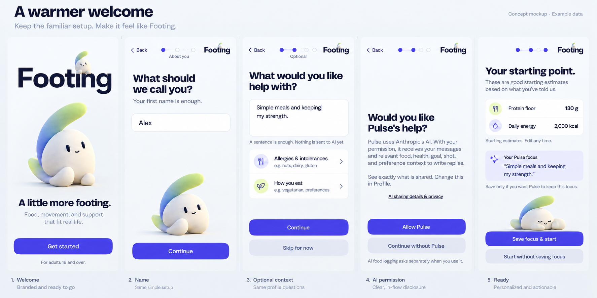
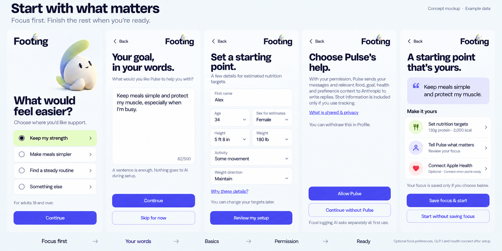
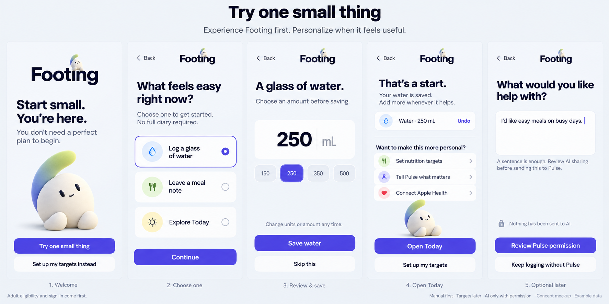

Three ways to begin.
One light refresh. Two different flows. All use the current Footing logo, quiet Cove companionship, and separate choices about AI sharing and what Pulse remembers.
My recommendation: Start with what matters. Give the person’s goals a place before the numbers. Keep the required setup focused, then let them explicitly choose Pulse and save a starting focus.
A warmer welcome
Keep the familiar questions. Add the new logo and Cove, fold a short optional goal into preferences, and offer Pulse permission near completion.

Best for: a smaller pre-launch change. Tradeoff: it still asks for a full profile before someone experiences the app.
Start with what matters
Choose what support would help. Describe it in a sentence if you want. Then set a starting point, choose Pulse permission, and review exactly what focus to save.

Best for: a personal launch experience with meaningful targets. Tradeoff: requires reorganizing setup and adding a dedicated account-owned Pulse focus.
Try one small thing
After sign-in and adult eligibility, begin with water, a note, or exploring Today. Save only after review, offer Undo, and let deeper setup follow when useful.

Best for: showing the app’s value with very little effort. Tradeoff: Today and onboarding completion both need proper support for unfinished profiles.
Consent without a permission gauntlet.
| Choice | Ask when | Keep available if declined |
|---|---|---|
| Pulse | Optional setup, before the first coach request | Ordinary tracking |
| AI food logging | First AI parse | Search, scan, usual meals and manual logging |
| Apple Health | After Connect is tapped | Manual records |
| Notifications | When a reminder is enabled | The saved schedule without a notification promise |
| Microphone / speech | First tap to speak | Typing and other logging methods |
Typing is not consent. Consent is not memory approval. Keep the goal as a draft until the person explicitly saves it. Offer a normal start path if they decline Pulse or skip the goal. Don't send setup text to AI first and ask afterward.
What I would change in every direction.
- Put Footing first. Show the new logo on the usable welcome and genuine app-owned loading state. No forced logo delay.
- Let Cove accompany. A quiet welcome and a gentle presence at completion; Pulse keeps the coaching role.
- Keep the promise clear. Start today, log what is useful, and make partial tracking feel normal.
- Align age eligibility. The current DOB picker permits 13+, while the public policy says 18+. Resolve that before collecting health details.
- Make the primary action available immediately. The existing intro animation currently delays it.
Review scope and source notes
I captured the current read-only welcome and reviewed the router and all onboarding step sources. The other steps were source-reviewed, not newly clicked through on a physical device. Large-text, VoiceOver, keyboard and branching behavior need testing after implementation.
Current welcome capture · Full flow-by-flow notes · Image references and provenance

Generated images are visual drafts. Use original approved logo and Cove files in implementation, not assets extracted from the boards.